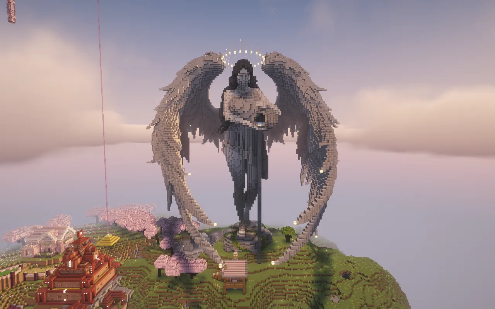

A survival server
for adults.
A vanilla Minecraft world shared by the Turtle SMP community.

A shared
survival world.
Turtle SMP is a vanilla survival server for adults who simply want to play Minecraft together.
There are no pay-to-win perks, donor crates or ranks. Just a shared world, a community Nether hub and a shopping district at spawn.
Get to know the serverExplore Turtle SMP.
Help us grow
Vote for Turtle SMP on your favourite server list. Voting is optional and has no in-game rewards.